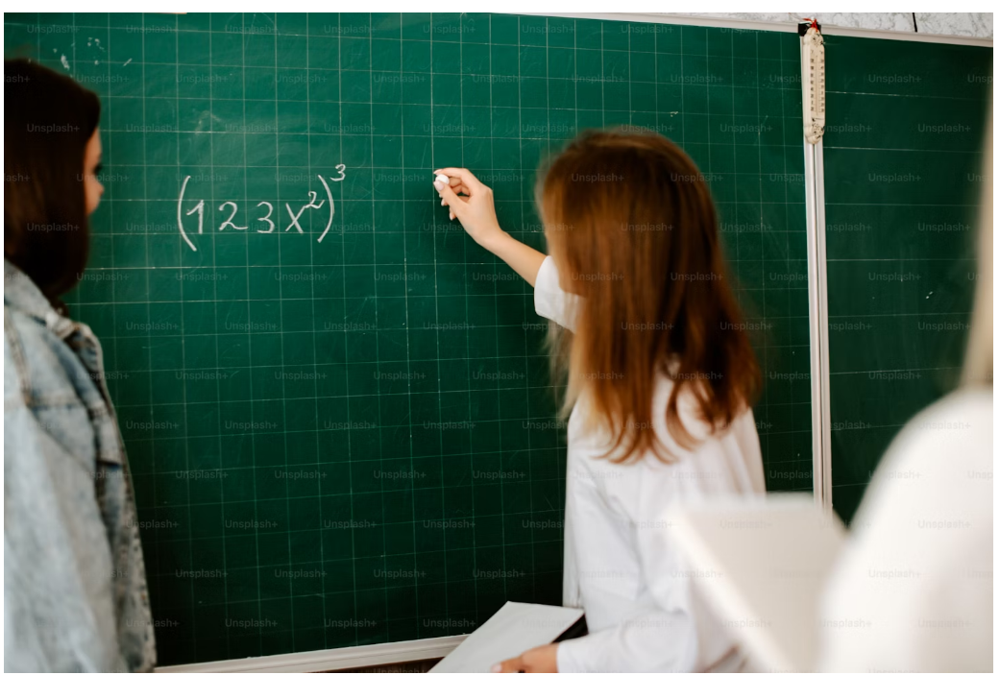
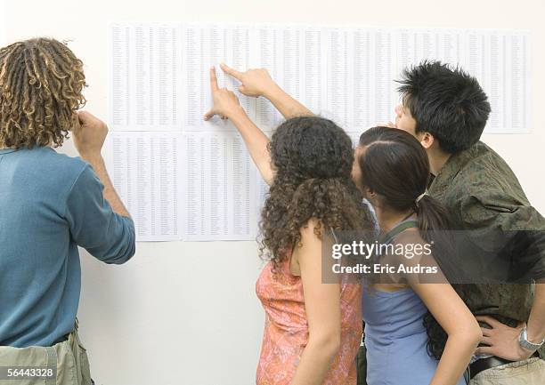

Bienvenue sur la page du lycée
Des ressources pour accompagner les élèves de Seconde, Première et Terminale dans l’apprentissage des mathématiques modernes : fonctions, probabilités, algèbre, analyse et préparation au bac.

Compétences visées
- Maîtriser les fonctions usuelles (affines, exponentielles, logarithmes…)
- Développer une rigueur dans le raisonnement mathématique
- Résoudre des équations complexes et inéquations
- Utiliser les probabilités, les statistiques et les suites numériques
- Se préparer efficacement au baccalauréat
Ressources disponibles

Fiches de cours
Des résumés clairs et illustrés des chapitres clés du programme.

Sujets de bac
Entraînez-vous avec des sujets corrigés des années précédentes.

Activités interactives
Simulations, graphiques dynamiques et exercices auto-corrigés.